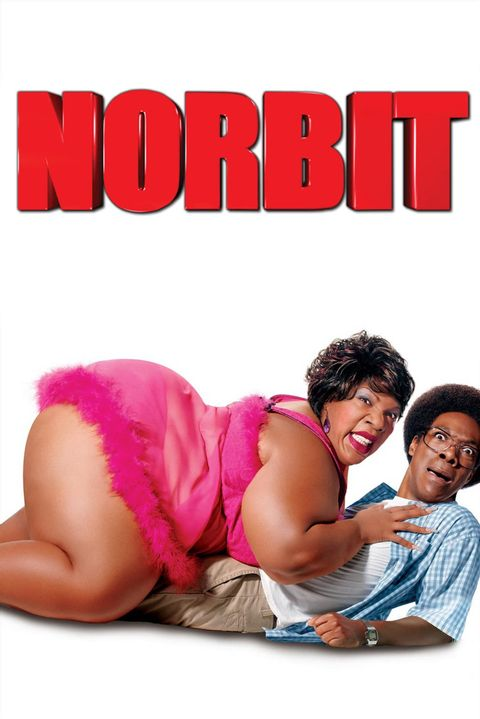

ROMANCE
|  |
Norbit (Brasil: Norbit - Uma Comédia de Peso /Portugal: Norbit) é um filme estadunidense de 2007 do género comédia dirigido por Brian Robbins e estrelado por Eddie Murphy e Thandie Newton. O filme foi indicado ao Oscar de melhor maquiagem, e também várias "vitórias" no Framboesa de Ouro de 2007. |
|
Ben é um publicitário que aposta com o chefe que faz qualquer mulher se apaixonar por ele em dez dias. Se conseguir, será o responsável por uma cobiçada campanha de diamantes. Andie é uma jornalista que, por causa de uma matéria, está decidida a infernizar a vida de qualquer homem que se aproximar. Os dois se conhecem em um bar e escolhem um ao outro como alvo de seus planos totalmente opostos. |
|
Outono em Nova York segue as aventuras de Will Keane, um dono de restaurante em Nova York, um playboy de quase 50 anos e mestre da sedução sem compromisso. Porém sua vida muda quando conhece Charlotte Fielding, uma jovem de 21 anos de idade e de espírito livre que gosta de experimentar a emoção da vida adulta. Esse encontro inesperado quebra os preconceitos de Will sobre mulheres, sexo e responsabilidade. |